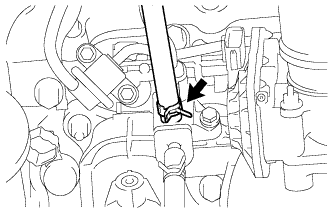

СИСТЕМА СНИЖЕНИЯ ТОКСИЧНОСТИ ОТРАБОТАВШИХ ГАЗОВ > ПРОВЕРКА БЕЗ СНЯТИЯ С АВТОМОБИЛЯ |
| 1. ПРОВЕРЬТЕ ЭЛЕКТРОВАКУУМНЫЙ КЛАПАН ПРОДУВКИ |
Убедитесь, что продувочный шланг подсоединен правильно.
|  |
Отсоедините продувочный шланг от адсорбера и подсоедините датчик разрежения.
Выполните проверку электровакуумного клапана продувки при температуре охлаждающей жидкости не более 55°C (131°F) (при холодном двигателе (электровакуумный клапан продувки закрыт)) согласно следующей процедуре.
Порядок проверки работы электровакуумного клапана продувки.
1. Когда двигатель работает на холостом ходу или с частотой вращения коленчатого вала 2500 об/мин, датчик разрежения показывает не более 1 кПа (25 мм рт.ст., 0,3 дюйма рт.ст.).
| Результат | Порядок выполнения |
| Да | Электровакуумный клапан продувки исправен |
| OP | Перейдите к следующему шагу |
| Результат | Порядок выполнения |
| OK | Проверьте жгут проводов и ECM |
| NG | Замените электровакуумный клапан продувки |
Выполните проверку электровакуумного клапана продувки при температуре охлаждающей жидкости не менее 80°C (146°F) (при прогретом двигателе (электровакуумный клапан продувки открыт)) согласно следующей процедуре.
Порядок проверки работы электровакуумного клапана продувки.
1. Когда двигатель работает на холостом ходу, датчик разрежения показывает не менее 40 кПа (300 мм рт.ст., 11,8 дюйма рт.ст.).
| Результат | Порядок выполнения |
| Да | Электровакуумный клапан продувки исправен |
| OP | Перейдите к следующему шагу |
| Результат | Порядок выполнения |
| OK | Проверьте жгут проводов, ECM и продувочный шланг между электровакуумным клапаном продувки и впускным коллектором. |
| NG | Замените электровакуумный клапан продувки |
| 2. ПРОВЕРЬТЕ ЧАСТОТУ ВРАЩЕНИЯ КОЛЕНЧАТОГО ВАЛА, ПРИ КОТОРОЙ ПРОИСХОДИТ ОТСЕЧКА ТОПЛИВА |
Запустите и прогрейте двигатель.
Поддерживайте частоту вращения коленчатого вала двигателя на уровне 3000 об/мин.
Используя звуковой стетоскоп, проверьте шум при работе форсунки.
При отпускании педали акселератора звук работы форсунки должен кратковременно прекратиться, после чего возобновиться.
Если результат проверки не отвечает требованиям, проверьте форсунку, проводку и ЕСМ.
| 3. ОСМОТРИТЕ ШЛАНГИ, РАЗЪЕМЫ И ПРОКЛАДКИ |
Убедитесь в отсутствии трещин, утечек и повреждений.
| 4. ПРОВЕРЬТЕ ШЛАНГИ И СОЕДИНИТЕЛИ |
Убедитесь в отсутствии ослабленных соединений, значительных перегибов и повреждений.
| 5. ПРОВЕРЬТЕ ТОПЛИВНЫЙ БАК В СБОРЕ |
Убедитесь в отсутствии деформации, трещин и следов утечки топлива.
| 6. ПРОВЕРЬТЕ РАБОТУ ВСПОМОГАТЕЛЬНОЙ СИСТЕМЫ ПОДАЧИ ВОЗДУХА В НЕЙТРАЛИЗАТОР |
Запустите и прогрейте двигатель.
Выключите зажигание.
Подсоедините портативный диагностический прибор к DLC3.
Включите зажигание и портативный диагностический прибор.
Войдите в следующие меню: Powertrain / Engine and ECT / Utility / Air injection check / Manual Mode / AIR PUMP: ON (ВКЛ), ASV: OPEN и AIR PUMP: OFF (ВЫКЛ), ASV: CLOSE.
Запустите двигатель.
Выполняйте вмешательство в работу системы AIR, когда двигатель работает на холостом ходу.
Убедитесь в том, что состояние воздушного нагнетателя (AIR PUMP), состояние ASV и давление в канале системы AIR (PRESSURE), отображаемые на экране портативного диагностического прибора, соответствуют значениям, указанным в таблице ниже.
| Режим работы прибора | ВОЗДУШНЫЙ НАГНЕТАТЕЛЬ | ASV | PRESSURE*1 | PULSATION*2 |
| ВОЗДУШНЫЙ НАГНЕТАТЕЛЬ: ON (ВКЛ), ASV: ОТКРЫТО | ON (ВКЛ) | ON (ВКЛ) | 2,4 кПа или выше | 20 кПа или выше |
| ВОЗДУШНЫЙ НАГНЕТАТЕЛЬ: OFF (ВЫКЛ), ASV: ЗАКРЫТО | OFF (ВЫКЛ) | OFF (ВЫКЛ) | Менее 2,4 кПа | Менее 30 кПа |
Выключите зажигание.